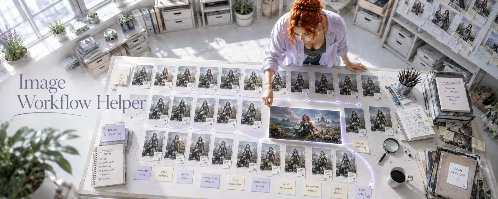
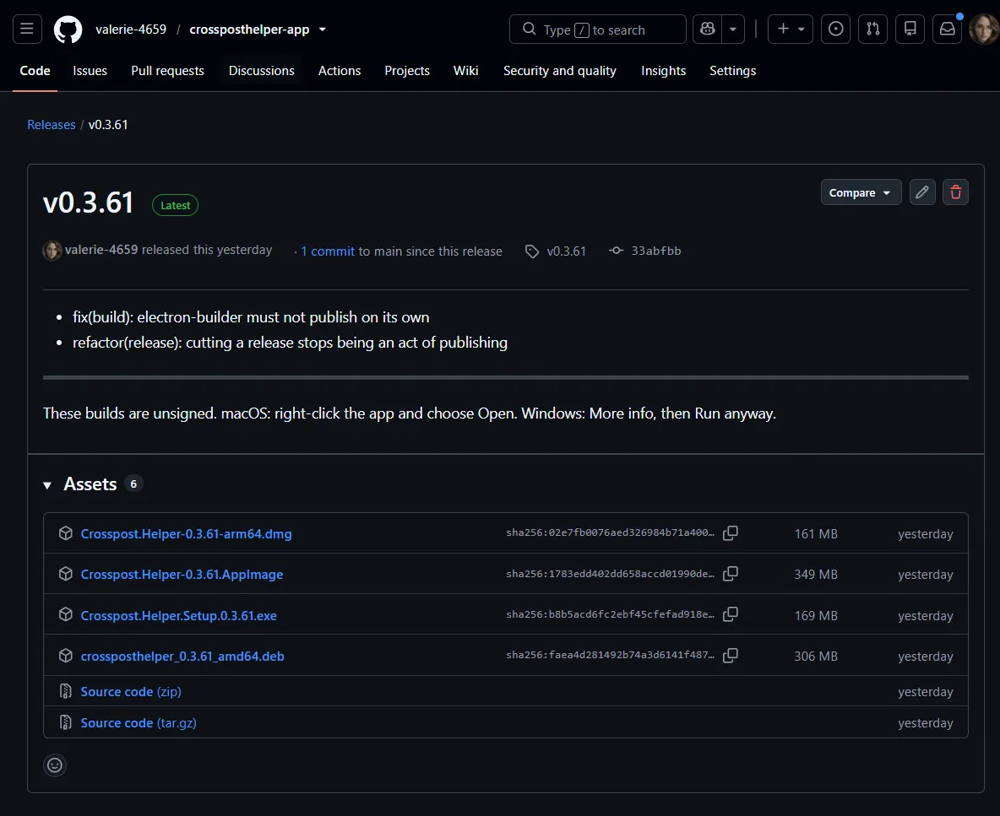

Where I have been for a week
Nothing dramatic. Just friction, everywhere.
Builds happened on my machine. That sounds fine until you notice what it means: the Windows and Linux versions were cross-compiled on a Mac, by one person, at whatever moment felt right. If a build was broken for an hour, nobody could tell whether they had the broken one.
Versions were vague. You downloaded a file, and if a newer one existed you found out by checking manually. There were no release notes attached to the thing you actually downloaded, so "what changed?" had no good answer.
And when something went wrong for you, there was nowhere sensible to say so.
What GitHub gives that a storefront cannot
Actually, I wanted to stick with itch.io—no need for yet another GitHub account or SSH key. But in the end, there just aren't enough features. I need feedback; I want to see if people are using the tools. And that's why GitHub is the better choice.
The tools
Crosspost Helper - a local library of everything you have generated, that remembers where each image has already been. Point it at your folders and it indexes them, reads the generation data out of the files, and from then on the loop is: pick something you have not posted to this platform yet, write the caption, send it to the composer, mark it as posted. The picking is a fair shuffle rather than a dice roll, so every eligible image comes up once before any of them repeats. The point of the whole thing is that the same render never quietly goes to Bluesky twice.
https://github.com/valerie-4659/crossposthelper-app
ArticleHelper - CivitAI's article editor is a browser text box: no drafts you can trust, no version history, no way to reuse a heading style across twenty articles. This is a desktop editor for the writing part, which then hands the finished thing over. Define your heading styles once, colour and font and Unicode lettering per level, and every article you export afterwards uses them. Keep several language versions side by side with the untranslated lines highlighted, and split a long piece into a series at the cursor. When you are done, Copy HTML puts the whole thing on the clipboard with the styles already inlined, so pasting into CivitAI needs no restyling on the other side. There is also a planning canvas for story worlds, and the bounty side: import entries from a URL, rate them, then drag winners into place. (In the future, the tool will become independent of CivitAI and platform-agnostic.)
https://github.com/valerie-4659/articlehelper-app
Prompting Helper - the one that keeps characters consistent. Build prompts from pieces you can reuse instead of retyping them, keep your characters and their styles as things rather than as text you paste, and manage the model library behind all of it. It used to be called SD Prompt Manager Tool, and it has the longest history of the eight: three thousand releases' worth of small changes, with five and a half thousand tests underneath. It was the last one to move across, and it moved this week.
https://github.com/valerie-4659/promptinghelper-app
Metadata Helper - your prompt, seed and sampler live inside the image file. Then you upscale it, run a face fix, or convert it to JPEG for uploading, and they are gone, because the tool that touched it never carried them over. This copies them back: pick the image that still has its data, pick the ones that lost it, press one button. PNG to PNG, JPEG to JPEG, and across the two in either direction, which is where it usually gets lost. The metadata is a text box rather than a black box, so you can edit the prompt or strip a LoRA before writing.
https://github.com/valerie-4659/metadatahelper-app

Image Workflow Helper - generating the image is the short part. What takes the time is everything around it: which of the eleven versions was the good one, which prompt produced it, what still needs an upscale, and where the finished file went. So this puts it on a board - Backlog, In Progress, Done - where a job carries its versions, its metadata and its thumbnails with it. When one version wins, a wizard walks you through picking it, clearing out the alternatives, checking the generation data and writing the result into a clean final folder with the original kept beside it. Deleting moves things to trash rather than removing them.
https://github.com/valerie-4659/imageworkflowhelper-app
ArtQueue - right-click, Save as, pick a folder, rename, repeat. Forty times, and at the end everything sits in Downloads with names like dd8f2a1b.jpg. This queues them instead: click what you want while you browse and the extension downloads them in the background into the folder you picked. With a Grok key it also sorts them as they arrive, filing each one by what is actually in the picture, using tag priority lists you define so the folder choice is predictable rather than whatever the model thought of first. Works on DeviantArt and sta.sh, on CivitAI, and on luscious. It used to be called DeviantArt Downloader, back when it only knew one site.
https://github.com/valerie-4659/artqueue-app
Civit Helper - you are going through a creator's gallery and you want to react to thirty images and save them to a collection. On CivitAI that is thirty times: hover, react, open the menu, pick the collection, confirm. Somewhere around the tenth you stop bothering. This adds checkboxes. Tick what you want, press one button, and it works through them one at a time with small pauses, which is politeness towards the site rather than something to optimise away. It only ever adds reactions that are not already there, so it cannot un-react anything, and buzz tipping is off unless you switch it on. It used to be called Civitai Bulk React + Save.
https://github.com/valerie-4659/civithelper-app
XHelper - answering other creators well takes time, and answering them badly is worse than not answering. A one-word compliment under the fortieth image reads exactly like what it is. This drafts the reply you would have written if you had twenty minutes: shaped by who the person is, what you have said to them before, and what is actually in the post. It filters its own output, so a suggestion that repeats something you already sent to that person, or that contains a phrase on your never-say list, is not offered at all. And it never posts anything by itself. No autopilot, no batch approve, and no code in it that clicks the Post button: it writes into the composer and stops there. (Currently alpha, and the interface is German.)
https://github.com/valerie-4659/xhelper-app
All eight have downloads now: five desktop apps and three browser extensions, each with its own release page, its notes attached to the build, and somewhere to tell me when it breaks.

What I would like from you
Use them. And when one of them annoys you, open an issue on its page instead of quietly giving up on it. Half of what is in these tools exists because somebody told me a thing was irritating.
Everything is free, everything runs on your own machine, and nothing phones home.
Back to building. 💕
First published on X. Replies and conversation live there.